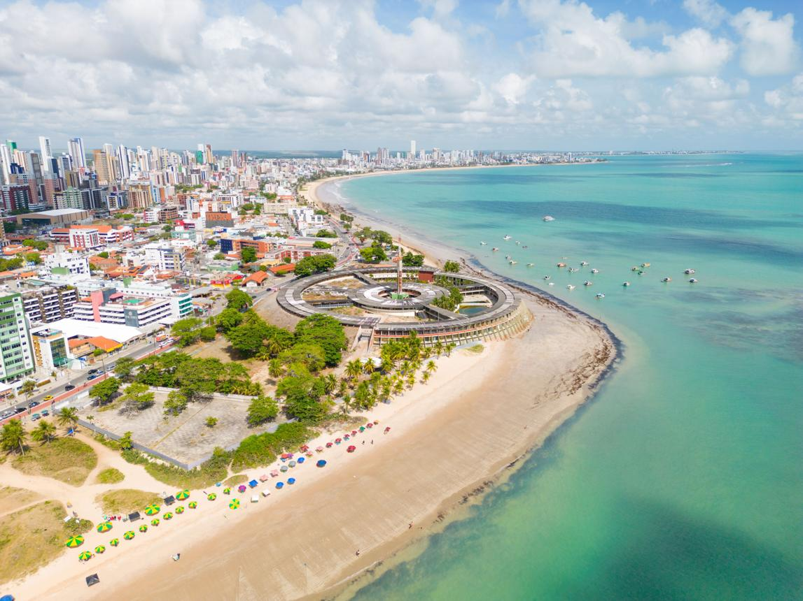

Estação Cabo Branco
Cabo Branco é uma praia urbana brasileira de João Pessoa, capital do estado da Paraíba. De areia fina e batida, a praia apresenta ainda coqueiros e «falésias vivas»,denominação dada pela ação dos fenômenos naturais que atuam nas falésias de até 40 metros.